Consider an Octahedron.
| 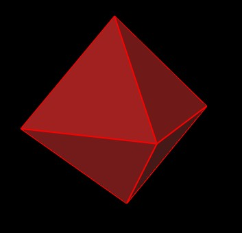 |
| Figure 1 An Octahedron |
Within any Octahedron, an Icosahedron can be defined by dividing the Octahedron's edges into Golden Ratio segments.
| 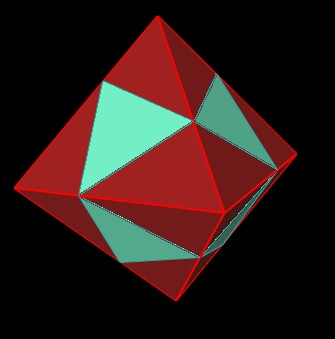 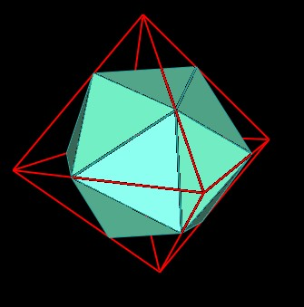 |
| Figure 2 An Icoahedron within the Octahedron |
Note that the 12 vertices of the Icosahedron exactly match (are on) the 12 edges of the Octahedon.
But there are two ways to divide an edge into Golden Ratio segments, depending on which end of the edge you start measuring from. So, there are two Icosahedra defined within each Octahedron.
| 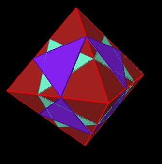 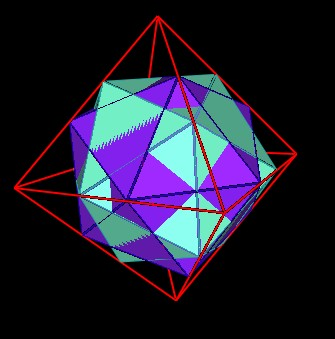 |
| Figure 3 Second Icoahedron within the Octahedron |
| 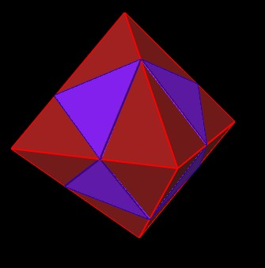 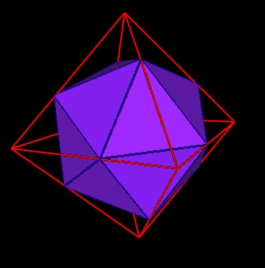 |
| Figure 4 Second Icoahedron within the Octahedron |
Note that the 8 Icosahedron triangles on the 8 faces of the Octahedron are in the form of the Jitterbug's 8 triangles.
Recall that 5 Octahedra fit into Marvin Solits' "30-Verti" and is also the basis of Lynnclaire Dennis' "120 Polyhedron".
| 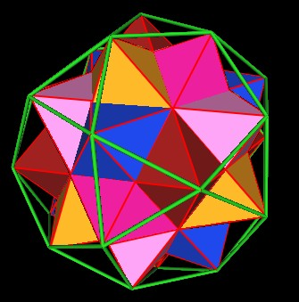 |
| Figure 5 Five Octahedra within the 30-Verti |
So, when the 5 octahedra are some oriented, what is the orientation of the
It turns out that 5 of the Icosahedra are coincident. That is, they all have the same orientation and share/define the same 12 vertices.
| 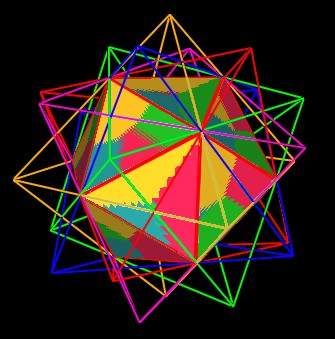 |
| Figure 6 Five Coincident Icosahedra |
However, the remaining 5 Icosahedra are not coincident.
| 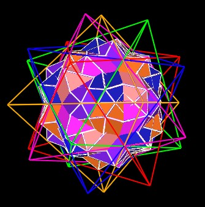 |
| Figure 7 The other five Icosahedra |
Note that all the vertices of all the Icosahedra are on edges of the Octahedra.
Connecting the vertices of these 5 Icosahedrs together gives the following polyhedron.
| 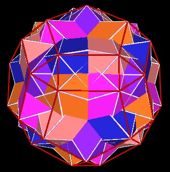 |
| Figure 8 Polyhedron defined by 5 Icosahedra |
Usage Note: My work is copyrighted. You may use my work but you may not include my work, or parts of it, in any for-profit project without my consent.